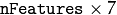
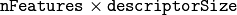

This section describes two popular algorithms for 2d feature detection, SIFT and SURF, that are known to be patented. Use them at your own risk.
Class for extracting keypoints and computing descriptors using the Scale Invariant Feature Transform (SIFT) algorithm by D. Lowe [Lowe04].
| [Lowe04] | Lowe, D. G., “Distinctive Image Features from Scale-Invariant Keypoints”, International Journal of Computer Vision, 60, 2, pp. 91-110, 2004. |
The SIFT constructors.
| Parameters: |
|
|---|
Extract features and computes their descriptors using SIFT algorithm
| Parameters: |
|
|---|
Note
Python API provides three functions. First one finds keypoints only. Second function computes the descriptors based on the keypoints we provide. Third function detects the keypoints and computes their descriptors. If you want both keypoints and descriptors, directly use third function as kp, des = cv2.SIFT.detectAndCompute(image, None)
Class for extracting Speeded Up Robust Features from an image [Bay06]. The class is derived from CvSURFParams structure, which specifies the algorithm parameters:
Threshold for the keypoint detector. Only features, whose hessian is larger than hessianThreshold are retained by the detector. Therefore, the larger the value, the less keypoints you will get. A good default value could be from 300 to 500, depending from the image contrast.
The number of a gaussian pyramid octaves that the detector uses. It is set to 4 by default. If you want to get very large features, use the larger value. If you want just small features, decrease it.
The number of images within each octave of a gaussian pyramid. It is set to 2 by default.
| [Bay06] | Bay, H. and Tuytelaars, T. and Van Gool, L. “SURF: Speeded Up Robust Features”, 9th European Conference on Computer Vision, 2006 |
Note
The SURF extractor constructors.
| Parameters: |
|
|---|
Detects keypoints and computes SURF descriptors for them.
| Parameters: |
|
|---|
The function is parallelized with the TBB library.
If you are using the C version, make sure you call cv::initModule_xfeatures2d() from xfeatures2d/nonfree.hpp.
Class used for extracting Speeded Up Robust Features (SURF) from an image.
class SURF_CUDA
{
public:
enum KeypointLayout
{
X_ROW = 0,
Y_ROW,
LAPLACIAN_ROW,
OCTAVE_ROW,
SIZE_ROW,
ANGLE_ROW,
HESSIAN_ROW,
ROWS_COUNT
};
//! the default constructor
SURF_CUDA();
//! the full constructor taking all the necessary parameters
explicit SURF_CUDA(double _hessianThreshold, int _nOctaves=4,
int _nOctaveLayers=2, bool _extended=false, float _keypointsRatio=0.01f);
//! returns the descriptor size in float's (64 or 128)
int descriptorSize() const;
//! upload host keypoints to device memory
void uploadKeypoints(const vector<KeyPoint>& keypoints,
GpuMat& keypointsGPU);
//! download keypoints from device to host memory
void downloadKeypoints(const GpuMat& keypointsGPU,
vector<KeyPoint>& keypoints);
//! download descriptors from device to host memory
void downloadDescriptors(const GpuMat& descriptorsGPU,
vector<float>& descriptors);
void operator()(const GpuMat& img, const GpuMat& mask,
GpuMat& keypoints);
void operator()(const GpuMat& img, const GpuMat& mask,
GpuMat& keypoints, GpuMat& descriptors,
bool useProvidedKeypoints = false,
bool calcOrientation = true);
void operator()(const GpuMat& img, const GpuMat& mask,
std::vector<KeyPoint>& keypoints);
void operator()(const GpuMat& img, const GpuMat& mask,
std::vector<KeyPoint>& keypoints, GpuMat& descriptors,
bool useProvidedKeypoints = false,
bool calcOrientation = true);
void operator()(const GpuMat& img, const GpuMat& mask,
std::vector<KeyPoint>& keypoints,
std::vector<float>& descriptors,
bool useProvidedKeypoints = false,
bool calcOrientation = true);
void releaseMemory();
// SURF parameters
double hessianThreshold;
int nOctaves;
int nOctaveLayers;
bool extended;
bool upright;
//! max keypoints = keypointsRatio * img.size().area()
float keypointsRatio;
GpuMat sum, mask1, maskSum, intBuffer;
GpuMat det, trace;
GpuMat maxPosBuffer;
};
The class SURF_CUDA implements Speeded Up Robust Features descriptor. There is a fast multi-scale Hessian keypoint detector that can be used to find the keypoints (which is the default option). But the descriptors can also be computed for the user-specified keypoints. Only 8-bit grayscale images are supported.
The class SURF_CUDA can store results in the GPU and CPU memory. It provides functions to convert results between CPU and GPU version ( uploadKeypoints, downloadKeypoints, downloadDescriptors ). The format of CPU results is the same as SURF results. GPU results are stored in GpuMat. The keypoints matrix is  matrix with the CV_32FC1 type.
The descriptors matrix is  matrix with the CV_32FC1 type.
The class SURF_CUDA uses some buffers and provides access to it. All buffers can be safely released between function calls.
See also
Note